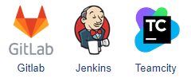

Running the autotest from the command line
To run autotests in popular continuous integration systems, you need to use the Windows command line.

In the "Project" window (on the "Explorer" tab), select the autotest file that you want to run.
Then click on the "Create a launch command" button on the toolbar
As a result, you will see a window with ready-made commands.
The syntax of the startup command:
Hat.exe [Autotest_file_name] [Path_To_The_Project_Folder]
Open the command prompt
Use the received commands
The autotest will be launched, and all the execution steps will be reflected in the console
In case of an error, the step will show the method and its properties where the error occurred.
At the end, the result of the entire autotest is shown.
Created with the Personal Edition of HelpNDoc: What is a Help Authoring tool?